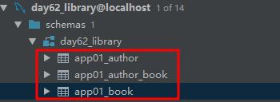
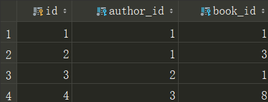
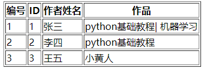

在models.py中，我创建了两张表，他们分别是作者表和书籍表，且之间的关系是多对多。
1 # 书
2 class Book(models.Model):
3 id = models.AutoField(primary_key=True)# 自增的主键
4 title = models.CharField(max_length=64, null=False, unique=True) # 创建一个varchar(64)不为空的唯一的书名字段
5 publisher = models.ForeignKey(to='Publisher',on_delete=models.CASCADE) # 和Publisher关联的外键字段
6
7 # 作者——注意作者和书应该是多对多的关系
8 class Author(models.Model):
9 id = models.AutoField(primary_key=True)
10 name = models.CharField(max_length=16,null=False,unique=True)
11 # 通过下面这条语句，不仅可以生成Author表，还可以自动生成第三张表
12 book = models.ManyToManyField(to='Book')# 建立作者和书的多对多的关系执行相关代码之后，生成三张表：

其中，app_author_book表如下图所示：

author表和book表通过生成第三张表，联系各自的id值相关联。
现在我想在一个页面展示我的所有作者：
1 # 展示作者
2 def author_list(request):
3
4 author_obj = models.Author.objects.all()
5 return render(request,'author_list.html',{'author_list':author_obj})再创建一个author_list.html页面把author_obj的值传过去：
1 <table border="1">
2 <thead>
3 <tr>
4 <th>编号</th>
5 <th>ID</th>
6 <th>作者姓名</th>
7 <th>作品</th>
8 </tr>
9 </thead>
10 <tbody>
11 {% for author in author_list %}
12 <tr>
13 <td>{{ forloop.counter }}</td>
14 <td>{{ author.id }}</td>
15 <td>{{ author.name }}</td>
16 <td>
17 {% for book in author.book.all %}
18 {% if forloop.last %}
19 {{ book.title }}
20 {% else %}
21 {{ book.title }}|
22 {% endif %}
23 {% endfor %}
24 </td>
25 </tr>
26 {% endfor %}
27 </tbody>
28 </table>问题来了，因为作者和书籍是多对多的关系，那么一个作者可能对应多本书，一本书也可能有多个作者。我想在每个作者后面展示他的作品，在models.py中我在Author表中加入了book字段，通过book字段我可以调用Book表中的数据，如上述代码的17行所示，我写的是author.book.all，为什么要写.all，而不是直接写author.book呢，正是因为一个作者可能有多本书，通过all可以显示所有的书的数据，而如果只写author.book的话，结果显示为None。所以记住，如果是多对多关系，记住别忘记加all哦。
简陋的结果如下图：
